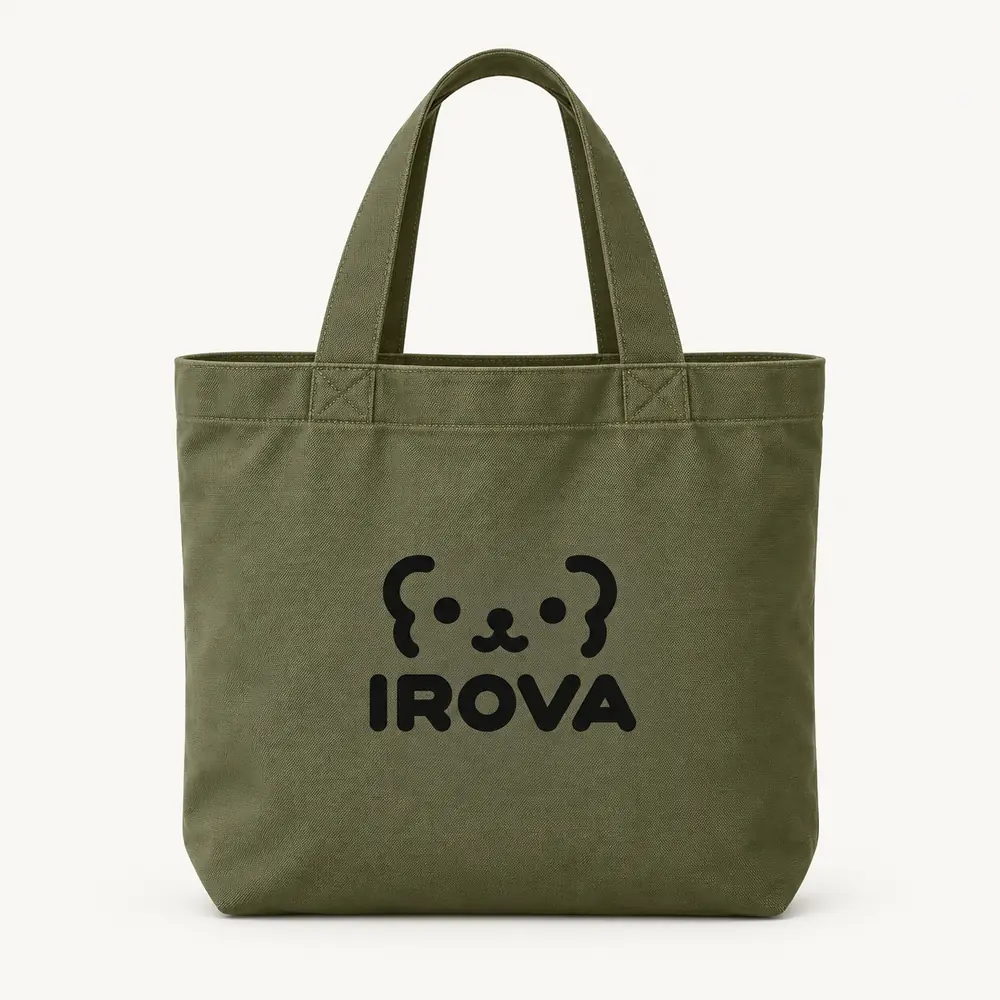
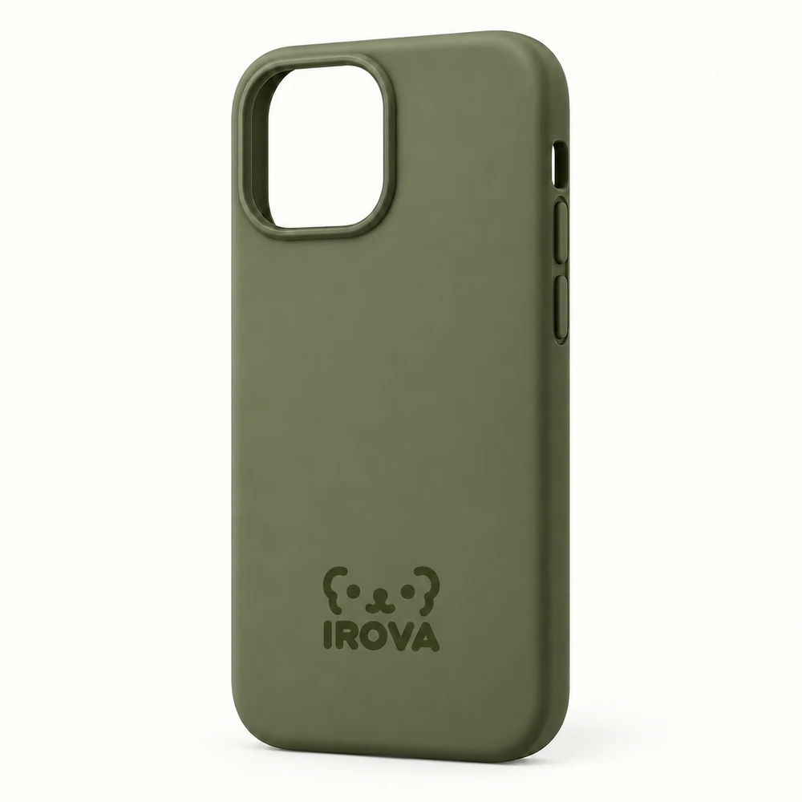
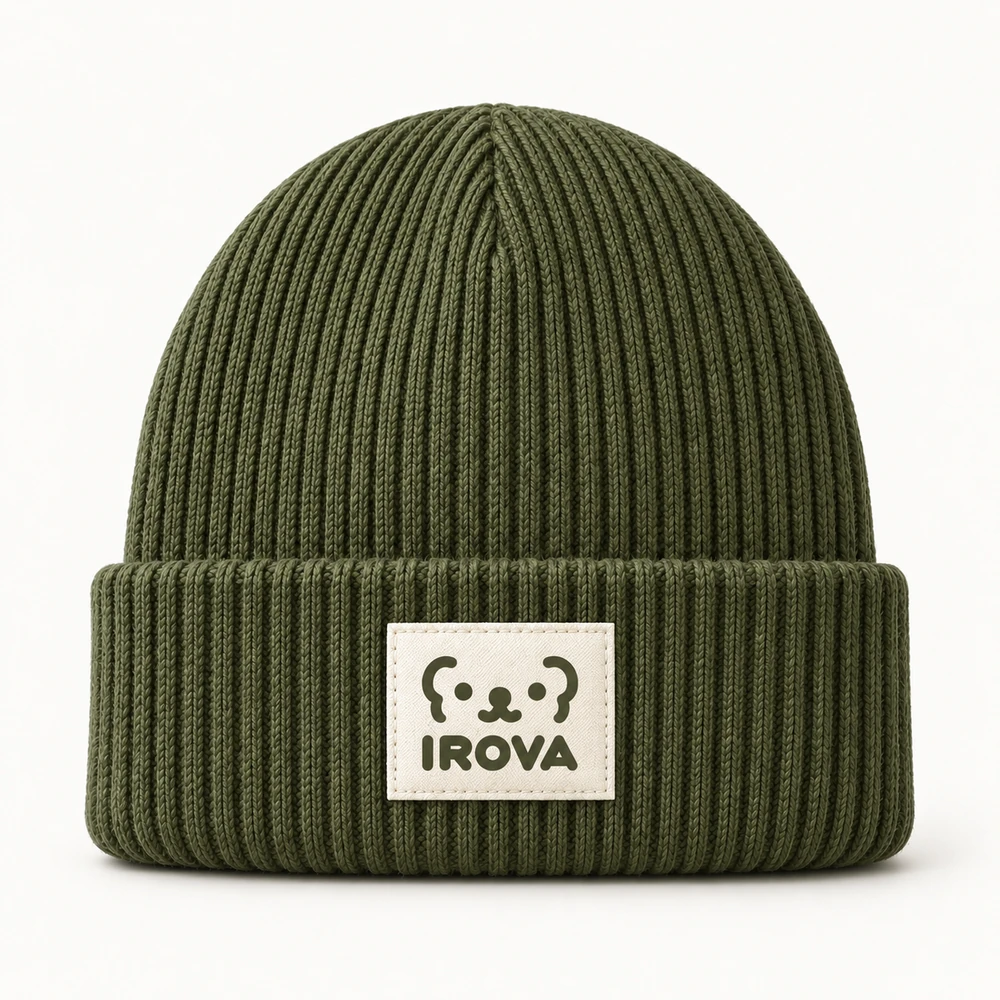
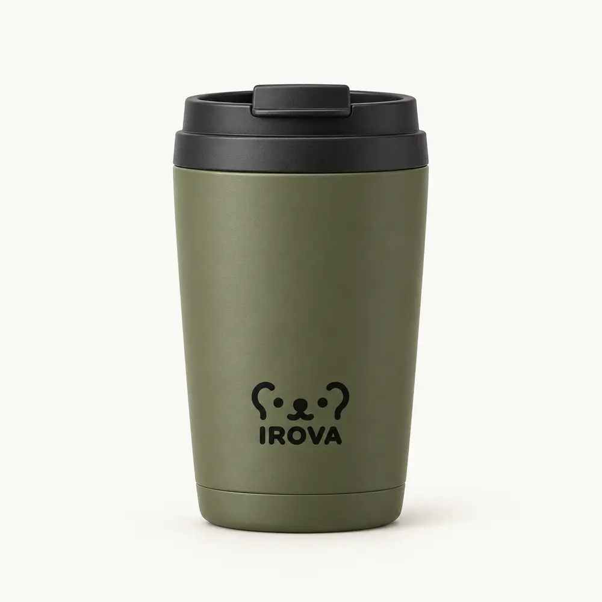

COLOR WORLD 01 · OLIVE / オリーブ
Olive.
ひとつの色から、 毎日をつなぐ。
自分で選んだデバイスの色から。イロチャンと一緒に、スマホ小物、ウェア、外出、暮らしまで、ひとつのOliveの世界へ。
コンセプトコレクション · 今後の展開案




32のデザイン
05つのカテゴリー
03つの展開段階
FROM A SYMBOL · TO YOUR EVERYDAY
入力できる小さな記号から、 持ち歩けるひとつの世界へ。
共通のサインは ʕ•ᴥ•ʔ。つなぐ色はOlive。手のひらの小物から、身につけるもの、持ち出すもの、家で使うものへ。
THE COMPLETE COLLECTION
小物から、暮らし全体へ。
32点のデザインを生活シーンから探しながら、それぞれの役割を見つけてください。
01 / DIGITAL EVERYDAY
デジタル小物05
自分で選んだデバイスの色から。スマホ、イヤホン、PCまで、同色のセットへ。
02 / LITTLE COMPANIONS
キャラクター小物04
イロチャンを貼る、付ける、身につける。小さなサインから日常へ広げます。
03 / WEAR YOUR COLOUR
ウェア・コーデ05
胸元の小さなサインから、足元の色まで。Oliveで一緒に着られるコーデを。
04 / CARRY THE WORLD
バッグ・お出かけ08
カードケースから身軽な外出、通勤、旅へ。暮らしのスケールと一緒に色を広げます。
05 / COLOUR AT HOME
暮らし・文具10
持ち出す色を、デスクや家へ。共通の包装で複数のアイテムをギフトにまとめます。
この小物は見つかりませんでした。
別の名前で探すか、すべてのデザインをご覧ください。
A DIRECTION TO GROW
この世界を、 少しずつ広げていく。
ブランドのサインから、同色のコーデへ。そして暮らしのシーン全体へ。IROVAの商品展開の提案です。
段階は展開順序の提案です。試作済み、または発売時期の決定を示すものではありません。
Oliveオリーブ
Canyonキャニオン
Purpleパープル
Wineワイン